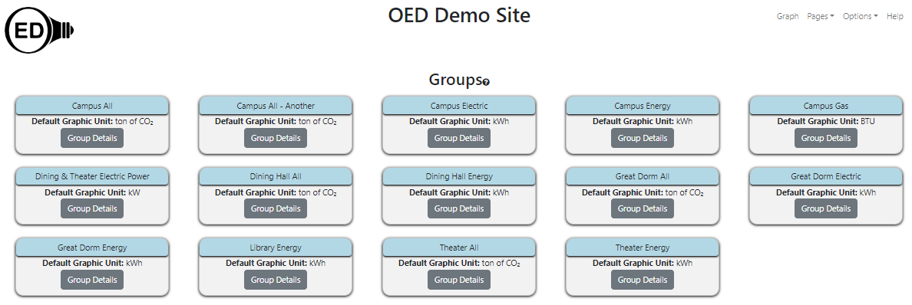
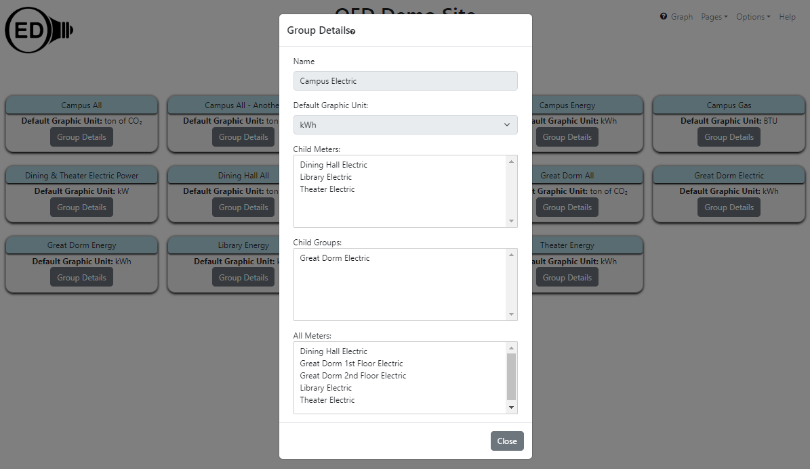
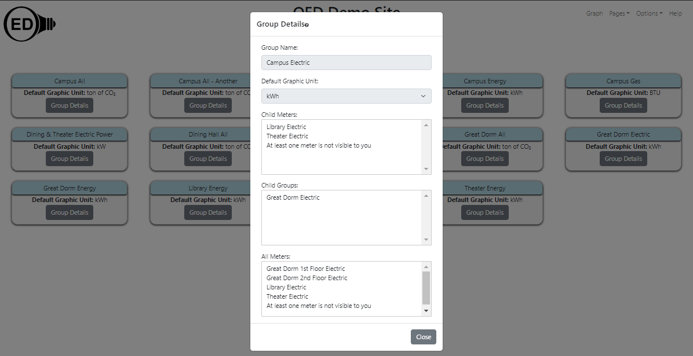

OED Documentation
Group Viewing
Version V1.0.0
Documentation overview
User documentation
Information
Graphing
Meters/Groups
Other Features
Admin documentation
Documentation versions for this page
Overview
Groups aggregate data as explained on the group graphing documentation page. To understand what data is included in a group, the groups page is available.
Usage
Click on the "Groups" page choice (see Page Choices for information on doing this). Once done, you will see what is in the next figure (for this demo site). 
This page gives an overview of all the groups that includes the name and the default graphing unit. For example, the "Campus All" group has a default graphic unit of "ton of CO2".
If you click on The "Group Details" button for any group then additional information is shown for that group. For example, the result of clicking the "Group Details" button for the group "Campus Electric" is shown in the following figure: 
The popup gives the following information:
- Group Name. The same name as was shown on the overview page.
- Default Graphic Unit. The same unit as was shown on the overview page.
- Child Meters. A list of all the meters that are included in this group. In this example it includes "Dining Hall Electric", "Library Electric" and "Theater Electric".
- Child Groups. A list of all the groups that are included in this group. In this example it includes "Great Dorm Electric".
- All Meters. A list of unique meters that are in this group from the child meters and groups. This means that the meters from the "Child Groups" are explicitly listed. In this example it includes "Dining Hall Electric", "Great Dorm 1st Floor Electric", "Great Dorms 2nd Floor Electric", "Library Electric" and "Theater Electric" where "Great Dorm 1st Floor Electric" and "Great Dorms 2nd Floor Electric" are from the group "Great Dorm Electric".
Clicking the "Close" button will take you back to the overview page for groups.
Details
If a group includes a meter that is not visible to one visiting the site then that will be indicated by replacing all hidden meters with "At least one meter is not visible to you" at the bottom of the list. In the previous example, if the "Dining Hall Electric" meter is not visible then the details popup would have shown the following: 
Similarly for groups that are not visible, you will see the message "At least one group is not visible to you".
Admins can see other details about groups as explained on the admin groups documentation page.